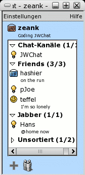
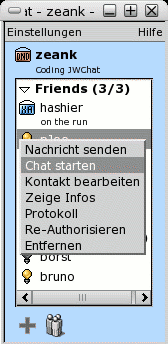
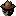

JWChat - Help
- Introduction
- Supported Browsers
- Your Contact List
- Online Status Indicators
- Adding an User to your Contact List
- Customizing (Your Preferences)

JWChat is a web based instant messenger (IM) just like AIM, MSN Messenger, Yahoo! Messenger or ICQ. This means you can manage your contacts and chat with other users directly. Unlike other IMs you can use this with your web browser without having to install any additional software at all. For a list of supported browsers see below. Your contact list is stored on the server. This means that you have access to your contact list from almost any computer as long as you've got access to the internet.
Supported browsers and plattforms:
Windows XP/2000/ME/98/95:
- MS Internet Explorer since version 5.0
- Netscape version 6 & 7
- Mozilla (stable) since version 1.0.2
Mac OS X:
- Mozilla (stable) since version 1.0.2
- Camino 0.7
- Safari since version 3
Linux:
- Mozilla et al since version 1.0.2

The contact list holds entries for each user you have added. By right clicking on such an item you get a context menu as shown in the screenshot to the left:
- Send Message: Opens the message dialog for this user
- Start Chat: Opens a chat window for this user
- Edit User: Opens the edit dialog for this user where you can set his nickname and change the groups he/she belongs to
- Show Info: Show the user's profile
- History: Opens the message history for this user
- Resubscribe: Opens a subscription request for this user
- Remove: Removes this user from your contact list (completely) and revokes your authentication for him/her (if any)
Left clicking an user pops up a message dialog.
- User is online
- User is willing to chat
- User is away
- User is not available
- User doesn't want to be disturbed
 - User is offline
- User is offline
- User is invisible
 - User hasn't authenticated you
Change your own online setting by choosing a state from the select box at the bottom of your contact list. For some states you can set a custom status message which is displayed to other users. If you choose "invisible" you appear to be offline to other users.
Add an user by clicking on . Enter the user's nickname in the subscription field and click "Send". Additionally you can enter a custom message in the textarea below. A subscription request with this message is sent to the user. If he or she accepts you can see his/her online status from now on.
After having sent this subscription request the user is added to your contact list and an edit user dialog pops up where you can set your custom nickname for this user and add him/her to one or more groups in your contact list.
You can create a new user group by entering a new name for "Group" at the "Available Groups" box followed by clicking on ">". Remove a user from a group by clicking on "<". A group is deleted from your contact list if there is no user left for this group.
Open the preferences dialog by clicking on . Here's a short explanation for each option you can select:
- Hide offline users
Hides users who are not online from your contact list.
- Automatically open messages and chats
If selected each time you get a message from an other user the corresponding dialog pops up automatically.
- Auto-Pop-Up if away
Whether to pop up messages although your status is not "available" or "chat"
- Play sounds
If selected short jingles will play for certain actions like incoming messages or users going on- or offline.
- Raise window if a new message is received
This will cause your contact list or your chat dialog to be raised over all other open windows if a new message arrives
- Display timestamps in one-to-one chats
Will display the time when a message arrived right to the users name in the chat dialog
© 2003 Stefan Strigler
Last modified: Mon Dec 5 18:46:40 CET 2005